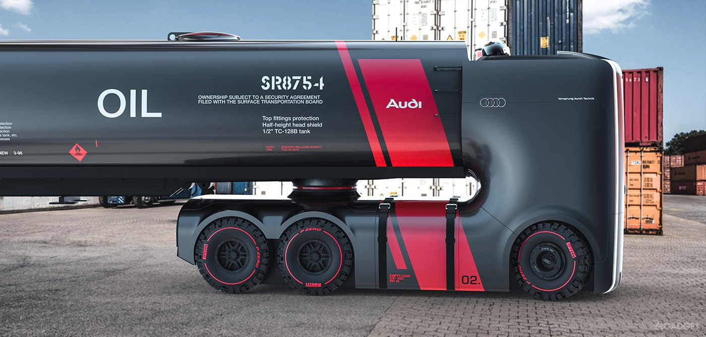

Немного об электрогрузовиках..

Электрификация автомобилей коснулась не только легковых машин, но и специальной техники, в том числе грузовых транспортных средств. Электрогрузовики в наше время становятся все более популярными благодаря своим преимуществам, а их недостатки с лихвой компенсируются экономичностью и отсутствием растрат на обслуживание.
- Виды электромобилей
- Немного истории создания электрического грузовика
- Какие технические параметры наиболее важны для электрогрузовика
- Максимальный запас хода
- Грузоподъемность
- Разгон
- Зарядка батареи
- Срок службы электропривода
- Срок службы батареи
- Компании, разрабатывающие электрогрузовики
- Модели разрабатываемых электрогрузовиков
- Электрогрузовик от компании Nikola
- Стоимость электрогрузовиков
- Перспективы электрических грузовиков
- Подводя итоги
- Невероятные электрогрузовики: Видео
 Электромобили – это обычные транспортные средства, в которых вместо двигателя внутреннего сгорания используется электрический мотор. Они могут быть разных видов и служить для разных целей:
Электромобили – это обычные транспортные средства, в которых вместо двигателя внутреннего сгорания используется электрический мотор. Они могут быть разных видов и служить для разных целей:
- Легковые – самый распространенный вид транспортных средств с электроприводом. К нему относятся те самые авто, на которых люди ездят каждый день. Предназначены для перевозки небольших грузов и двух-семи пассажиров. Для вождения требуется водительское удостоверение категории «В».
- Грузовые – транспортные средства, предназначенные для перевозки грузов в металлическом или тентированном кузове или на специальной грузовой платформе. Подразделяются на два основных типа:
- развозные – для транспортировки грузов в пределах города и ближайших окрестностей. Имеют хорошую маневренность, относительно компактные размеры и, как правило, пониженную высоту погрузки;
- грузовой электротягач – мощное транспортное средство, предназначенное для транспортировки грузов на дальние расстояния между городами и странами (так называемые фуры). Его особенность – наличие отдельного кузова и места для присоединения прицепа.
- Низкоскоростные – гольфкары и электромобили, скорость которых не превышает 40 км/ч.
- Специальная грузовая техника – к этому типу относятся грузовики, выполняющие специальные задачи, такие как пожарные машины, автокраны и так далее.
История электромобилей берет свое начало еще до появления машин с двигателями внутреннего сгорания. Однако назвать первый прототип, который появился еще в 1841 году, автомобилем довольно сложно. Это была простая платформа с электродвигателем, больше похожая на современный скейт с моторчиком.
Были и другие попытки, но в силу ограниченных технологий того времени использовать электрические силовые установки было невозможно. Поэтому энтузиасты тех времен обратили свой взор на паровые двигатели, а позже двигатели внутреннего сгорания (ДВС).
Если же говорить об электрогрузовиках, то точной даты появления первых моделей нет. Однако точно известно, что опытная эксплуатация в США началась в 1910-х годах. На протяжении нескольких десятилетий встретить электрогрузовики можно было очень редко, ведь они не пользовались популярностью вплоть до 70-х годов ХХ века, когда разгорелся нефтяной кризис.
В Европе грузовые электрокары начали появляться с 1960-х годов. Одним из первых их производителей был немецкий концерн Mercedes. Несколько позже за разработки электрических грузовиков взялись BMW, Mitsubishi, IVECO, DAF и многие другие компании
На сегодняшний день существуют весьма перспективные модели, которые не уступают по техническим характеристикам своим аналогам с двигателями внутреннего сгорания. Единственный сдерживающий фактор, которые ограничивает область применения электрогрузовиков, – запас хода и время полной зарядки.
Ведь если говорить о дальнобойных машинах, то на жидком топливе фуры могут проезжать больше 1000 км в день. На электрических вариантах это невозможно, так как у них ограниченный запас хода, а батарея заряжается довольно долго.
Какие технические параметры наиболее важны для электрогрузовика На самом деле требования к электрогрузовикам практически такие же, как и к обычным моделям с ДВС, к ним добавляется еще запас хода и некоторые другие нюансы.
На самом деле требования к электрогрузовикам практически такие же, как и к обычным моделям с ДВС, к ним добавляется еще запас хода и некоторые другие нюансы.
Требований может быть довольно много, и все зависит от специфики и условий, в которых будет использоваться грузовой электромобиль. Однако можно выделить основные технические параметры, которые важны в любых ситуациях:
- Запас хода.
- Грузоподъемность.
- Разгон и максимальная скорость.
- Время зарядки аккумуляторной батареи (АКБ).
- Срок службы электромотора.
- Срок службы АКБ.
Именно эти параметры необходимо изучить и принять к сведению в первую очередь при выборе электрического грузовика. Есть и другие нюансы, но это уже более узкая специализация, и в таких случаях нужен сугубо индивидуальный подход. Поэтому давайте детальнее рассмотрим основные требования к электромобилям для перевозки грузов.
Максимальный запас ходаЗапас хода – это один из важнейших параметров, ведь именно от него зависит трудовая способность автомобиля. Чем дольше он сможет работать без подзарядки, тем больше грузов получится перевезти.
Здесь важно учитывать, что сам по себе автомобиль имеет довольно большие размеры и массу, и при этом машина предназначена для перевозки грузов. Все это означает, что для работы электрогрузовику нужен мощный электромотор и емкая батарея.
Именно от соотношения массы автомобиля и емкости батареи будет зависеть максимальный запас хода
Если говорить о существующих моделях электрогрузовиков, то уже сегодня они способны проезжать около 150-300 км. Однако это лишь начало. Компания Tesla представила миру электрический грузовик нового поколения, который, по словам Илона Маска, способен проехать до 800 км при полной загрузке в 40 тонн.
Грузоподъемность Грузоподъемность не менее важна, чем запас хода. Именно этот параметр показывает, какую массу сможет перевозить транспортное средство. Для грузового транспорта это очень важно, ведь главная задача грузовика – транспортировка груза.
Грузоподъемность не менее важна, чем запас хода. Именно этот параметр показывает, какую массу сможет перевозить транспортное средство. Для грузового транспорта это очень важно, ведь главная задача грузовика – транспортировка груза.
Максимальная грузоподъемность подбирается индивидуально и зависит от вида и объёма груза, который нужно перевозить. Важно также учитывать и местность, в которой будет работать машина, ведь въезд на некоторые дороги и мосты может быть ограничен для грузового транспорта.
Кроме этого, для одних задач требуются небольшие и маневренные грузовики, для других лучше подойдут большие и мощные тягачи.
РазгонРазгон для грузовика не является критично важным параметром. Более того, слишком резкий и динамичный разгон не желателен, так как груз внутри кузова может быть поврежден. Однако мощность и динамика все же важны, ведь двигателю привести в движение загруженный автомобиль гораздо сложнее.
Кроме этого, не все дороги ровные, часто случаются подъемы, и довольно крутые. В этом случае очень важен крутящий момент, от которого и зависит динамика разгона и возможность преодолевать подъемы.
Крутящий момент, в свою очередь, зависит от мощности электромотора и аккумуляторной батареи. Он подбирается в зависимости от того, в каких условиях используется автомобиль. Чем больше грузоподъемность, тем больше крутящего момента нужно.
Зарядка батареиВремя зарядки – это очень важный параметр для любого электромобиля, как легкового, так и грузового. И если для владельцев легковых авто этот параметр может быть не столь критичен, то в случае с грузовиками это очень важный нюанс, от которого зависит трудоспособность машины. Ведь для любого бизнеса, крупного или малого, действует один закон: время – деньги.
Электромобиль можно заряжать двумя способами:
- от обычной бытовой розетки;
- от специальной зарядной станции.
Обычная бытовая розетка не способна выдать нужной мощности, поэтому для полной зарядки потребуется от нескольких часов до суток.
Специальные зарядные станции имеют трехфазную схему, которая позволяет существенно увеличить мощность. Благодаря этому время полной зарядки снижается в несколько раз. Как результат, в зависимости от ёмкости батареи полная зарядка грузового авто от трехфазных зарядных станций требует 3-10 часов.
 Отдельного внимания в этом вопросе требуют тягачи на электрической тяге, которые перевозят грузы на большие расстояния. В этом случае очень важна сеть электрозаправочных станций. В европейских странах такие сети активно развиваются, и уже сегодня электрозаправки можно встретить вдоль большинства дорог.
Отдельного внимания в этом вопросе требуют тягачи на электрической тяге, которые перевозят грузы на большие расстояния. В этом случае очень важна сеть электрозаправочных станций. В европейских странах такие сети активно развиваются, и уже сегодня электрозаправки можно встретить вдоль большинства дорог.
Однако важна и схема зарядного блока, а также возможность зарядки от бытовой розетки, так как организовать специальную трехфазную зарядную станцию не всегда возможно. Помимо этого, на загородных трассах подобные станции встречаются крайне редко.
Срок службы электроприводаРесурс электрического мотора – это один из важнейших параметров. Сразу стоит отметить, что в отличие от двигателя внутреннего сгорания, электрический мотор не нуждается в регулярном обслуживании (замене масла, фильтров и так далее), но при этом имеет довольно большой ресурс.
В электромоторах практически нет трущихся частей и все, что необходимо, – это вовремя смазывать подшипники, а также менять щетки на коллекторах. По сути, это вечные двигатели, так как ломаться там практически нечему
Крайне редко может выйти из строя обмотка, что повлечет за собой полную замену мотора. Но это может произойти только в случае сильной перегрузки и перегрева, что маловероятно, так как электроника имеет систему охлаждения и защиты от КЗ и перегрузок.
Срок службы батареиБатарея – это элемент с самым коротким сроком службы, который зависит от того, из каких материалов она изготовлена.
Как правило, в электромобилях используются Li-ion батареи, так как они имеют наиболее оптимальные параметры и способны выдавать большой ток. Но некоторые производители используют гелиевые аккумуляторы, которые также имеют довольно неплохие характеристики.
Оба варианта имеют срок службы около восьми лет, в зависимости от условий использования батареи. При правильной эксплуатации АКБ может прослужить до десяти лет, но в любом случае за такой период времени она потеряет часть своей емкости.
Компании, разрабатывающие электрогрузовики
Автомобильный мир постепенно переходит на электрические силовые установки, которые становятся всё более популярны. Учитывая этот факт, многие концерны уже сегодня активно занимаются разработками грузовиков на электрической тяге. Выше мы уже говорили о том, что некоторые бренды довольно давно выпускает электрогрузовики:
- Mercedes.
- BMW.
- IVECO и так далее.
Помимо этого, многие компании занимаются разработками новых моделей, которые в разы превосходят своих предшественников. К таким концернам относятся:
- Tesla.
- Renault.
- Daimler Trucks.
- Nikola.
- Thor trucks.
Конечно, подобными разработками занимаются и другие компании, но наиболее перспективными являются именно вышеперечисленные.
Модели разрабатываемых электрогрузовиковВыше мы перечислили концерны, которые занимаются разработками и уже представили свои прототипы. Подошло время рассмотреть, что же они могут предложить. И здесь довольно много интересного.
Tesla – представила свою модель, которая называется Semi. Это электрический тягач нового поколения, выпуск которого назначен на 2020 год. Примечательным являются его технические характеристики и стоимость:
- Разгон до 100 км/ч за 20 секунд при полной загрузке и за 5 секунд без груза.
- Запас хода – в зависимости от комплектации 500 или 800 км
- Зарядка – за 30 минут автомобиль заряжается на 600 км пути.
- Стоимость стартует c отметки в 150 000 долларов.
Daimler – представила свое видение электрогрузовиков в виде модели E-Fuso Vision One, одного из главных конкурентов «Теслы». E-Fuso Vision One имеет довольно привлекательные технические характеристики:
- Мощность – 730 л.с.
- Емкость батареи – 550 кВт/ч.
- Запас хода – до 400 км.
- До 80% батарея заряжается за 90 минут. Этого хватит примерно на 320 км пути.
Renault – представила уже второе поколение электрических грузовиков Renault Master Z.E., Trucks D и Trucks D Wide. Это серия грузового транспорта городского назначения. Модели имеют следующие характеристики:
| ТТХНазвание | Master Z.E | Trucks D | Trucks D Wide |
|---|---|---|---|
| Полный вес в тоннах | 3,1 | 16 | 26 |
| Мощность в кВт | 57 | 185 (при длительной работе 130) | 370 (260 при длительной работе) |
| Крутящий момент (Hm) | 225 | 425 | 850 |
| Максимальная скорость (км/ч) | 100 | - | - |
| Емкость АКБ (кВт*ч) | 33 | От 200 до 300 (в зависимости от комплектации) | 200 |
| Запас хода по циклу NEDC (км) | 200 | - | - |
| Запас хода в реальных условиях (км) | 120 | До 300 | До 200 |
Thor Trucks – еще один конкурент Tesla, который представил свой прототип Thor ET-One, имеющий следующие технические параметры:
- Максимальная скорость – 110 км/ч.
- Запас хода – 500 км с грузом 36 тонн.

На данный момент это все, что известно о грузовике.
Электрогрузовик от компании NikolaОтдельного внимания достойна модель One от молодого стартапа Nikola. Электрический грузовик Nikola One – это фура, имеющая грузоподъемность свыше 15 тонн b работающая от электрической силовой установки.
Мотор питается от аккумуляторной батареи на 320 кВт/ч, причём энергию для АКБ поставляет блок водородных топливных элементов (ВТЭ). Это означает, что запас хода электрогрузовика значительно выше, чем у всех конкурентов, и составляет практически 2000 км (1200 миль).
Суммарная мощность шести электродвигателей составляет 1000 л.с., благодаря чему разгон до 100 км/ч занимает 30 секунд. Компания уже получила большой заказ на 800 грузовиков, которые будут развозить пиво по городам США. Помимо этого, компания объявила о планах создать целую сеть водородных заправочных станций в Северной Америке, которая будет состоять из более чем 300 точек. По заявлению руководства, полная заправка будет занимать не более 20 минут.
Помимо этого, компания объявила о планах создать целую сеть водородных заправочных станций в Северной Америке, которая будет состоять из более чем 300 точек. По заявлению руководства, полная заправка будет занимать не более 20 минут.
Стоит отметить, что Nikola One – это первый в мире электрогрузовик с водородными топливными элементами, который открывает альтернативную ветку развития электромобилей.
Стоимость электрогрузовиковТак как выше мы говорили о прототипах, выпуск которых только планируется на 2019-2020 года, точной стоимости моделей нет. И хотя производители назвали стартовую стоимость, все же цифры могут измениться:
| Название- | Tesla Semi | Nikola One | Thor ET-One |
|---|---|---|---|
| Стоимость в долларах | 150 000 – с запасом хода до 480 км 180 000 – с запасом хода до 800 км. | Представленный концепт в единственном экземпляре стоит 375 000, в дальнейшем компания планирует продажи в формате лизиногового соглашения. Арендная плата будет составлять 7 000 в месяц. В эту цену входит стоимость заправки авто водородом. | От 250 000 |
Компания Daimler пока еще не назвала даже ориентировочную стоимость своего прототипа. Перспективы электрических грузовиков
Учитывая все вышесказанное, имеют довольно неплохие перспективы на будущее. Более того, уже сегодня представлены действующие концепты, которые будут серийно выпускаться в 2019-2020 годах.
Экономия, которую обеспечивают такие транспортные средства, очевидна. Есть и недостатки, о которых мы поговорим ниже и которые пока еще не дают раскрыть весь потенциал электрических транспортных средств. Причем это касается как грузовиков, так и легковых машин.
Но технологии не стоят на месте, а производители постоянно усовершенствуют свои разработки. Все это говорит о том, что будущее за электромобилями, которые уже сегодня превосходят свои жидкотопливные аналоги.
В завершение хотелось бы поговорить о достоинствах и недостатках. И к достоинствам можно отнести:
- Экономичность.
- Экологичность.
- Надежность.
- Мощность, в том числе и крутящий момент.
- Долговечность и так далее.
- При этом существует два довольно серьезных недостатка, которые пока еще остаются актуальными:
- Запас хода в условиях недостаточно развитой сети электрозаправочных станций.
- Время зарядки АКБ.
Конечно, если говорить о более развитых странах (США, Япония, Китай, страны Европы и так далее), то в городах данной проблемы нет. Но за пределами городов станций для заправки электромобилей всё ещё недостаточно. Впрочем, эта проблема активно решается.Если же говорить о России и странах бывшего СССР, то здесь все печальнее, так как не в каждом городе можно найти электрозаправку, не говоря уже о выезде за город. Но работа над устранением данной проблемы активно ведется, и в ближайшем будущем электромобили, в том числе и грузовые, будут свободно чувствовать себя не только на городских дорогах, но и за их пределами.
По материалам сайта: https://1electrocar.ru/proizvoditeli/elektrogruzoviki.html